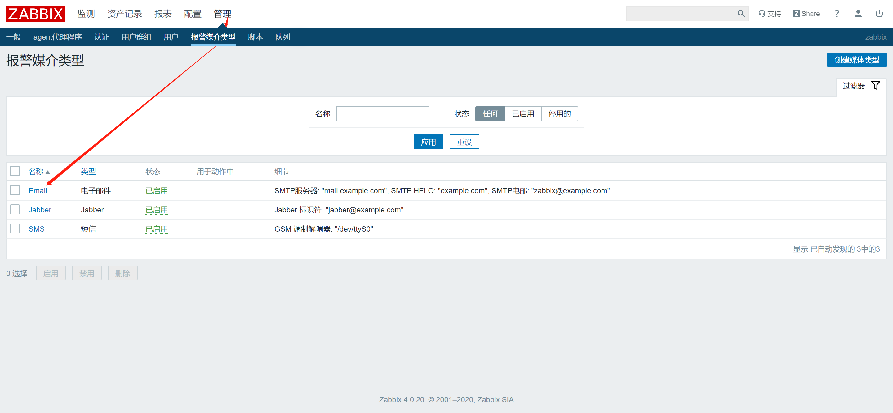
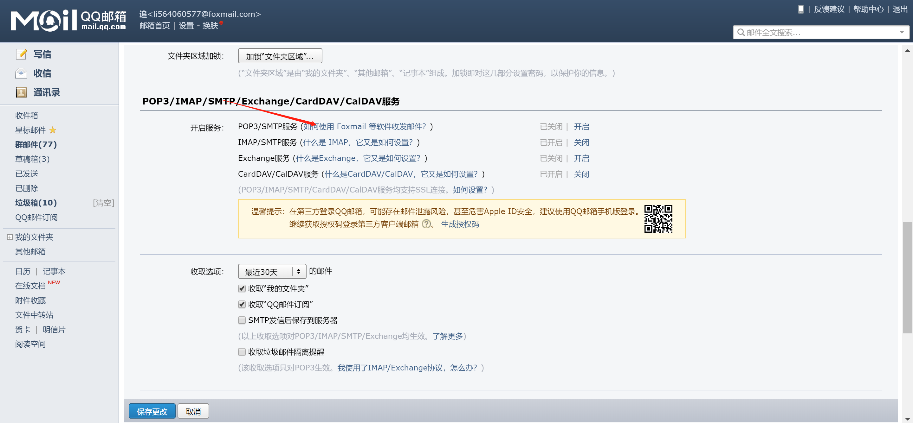
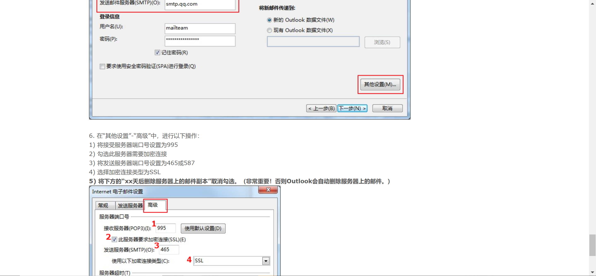
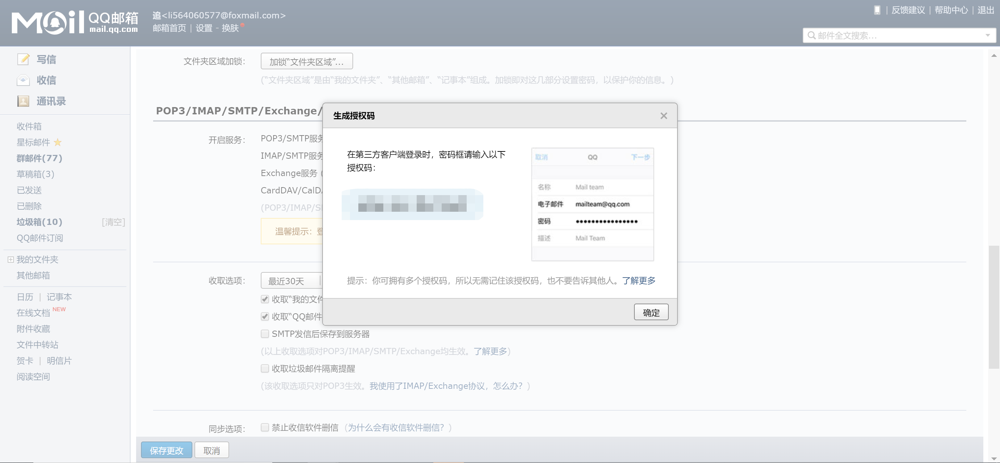
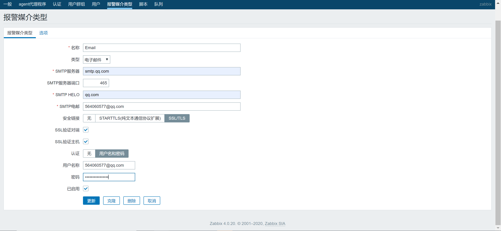
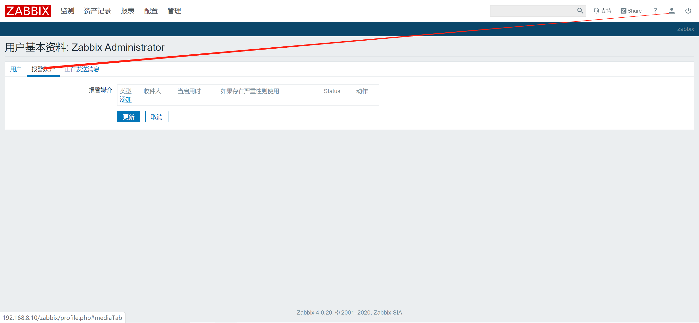
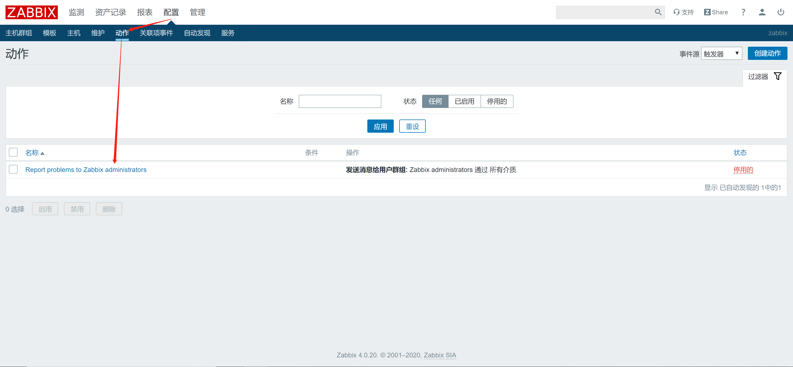
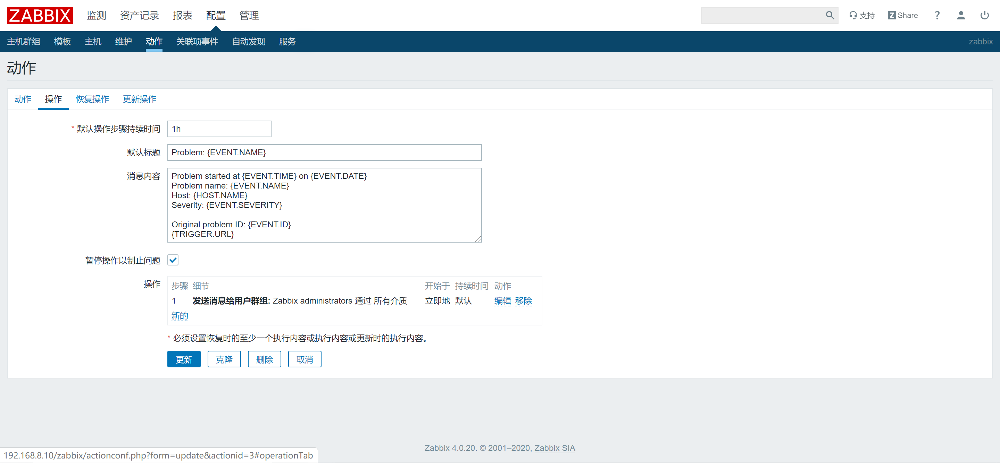

邮件发送通知
配置发送邮箱的设置





配置接收邮箱的设置



发送警告
报警邮件标题可以使用默认信息，亦可使用如下中文报警内容
名称：Action-Email
默认标题：故障{TRIGGER.STATUS},服务器:{HOSTNAME1}发生: {TRIGGER.NAME}故障!
告警主机:{HOSTNAME1}
告警时间:{EVENT.DATE} {EVENT.TIME}
告警等级:{TRIGGER.SEVERITY}
告警信息: {TRIGGER.NAME}
告警项目:{TRIGGER.KEY1}
问题详情:{ITEM.NAME}:{ITEM.VALUE}
当前状态:{TRIGGER.STATUS}:{ITEM.VALUE1}
事件ID:{EVENT.ID}
恢复警告
恢复标题：恢复{TRIGGER.STATUS}, 服务器:{HOSTNAME1}: {TRIGGER.NAME}已恢复!
恢复信息：
告警主机:{HOSTNAME1}
告警时间:{EVENT.DATE} {EVENT.TIME}
告警等级:{TRIGGER.SEVERITY}
告警信息: {TRIGGER.NAME}
告警项目:{TRIGGER.KEY1}
问题详情:{ITEM.NAME}:{ITEM.VALUE}
当前状态:{TRIGGER.STATUS}:{ITEM.VALUE1}
事件ID:{EVENT.ID}